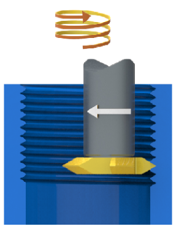
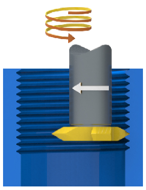
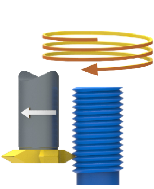
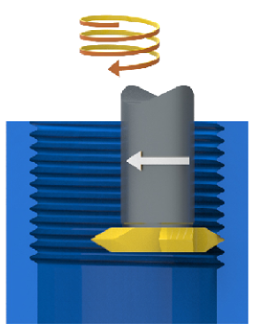
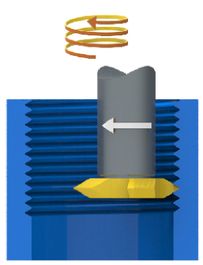
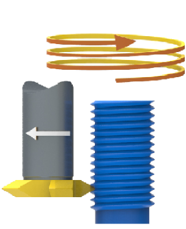
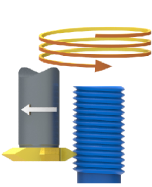

Parameters
Machining area
Top offset (1): Offset for the start of drilling.
Allowance XY (2): Material remaining on the hole wall.
Depth offset (3): Material remaining on the machining base.
Break through length (4): Extends the toolpath in the axial direction.
Absolute top / bottom: The defined absolute values are considered in each case. This facilitates simple machining if the drill hole(s) must be made before the material removal (of the stock model).
 |
Hole security
These parameters apply for all drilling cycles. They refer to the drill holes of the component.
Clearance distance: (1) Axial distance of the tool to the top of the drill hole during the approach. The approach takes place as a rapid movement up to the Clearance distance. The tool moves at the feedrate between the clearance distance and top of the drill hole.
Retract distance: (2) Axial distance of the tool to the top of the drill hole during retraction as a rapid movement.
Clearance
For the drilling mode 2D Drilling available:
The clearance parameters Clearance distance (3) and Clearance plane (4) are in relation to the current frame.
 |
Clearance plane: The J:Ft variable sets the clearance plane for all drilling cycles to the height of the highest selected feature relevant for machining. Entering J:Ft+50 results in additional clearance between the clearance plane and the highest feature selected in machining.
Thread/cutting mode
Select the machining options for the thread. The following information applies to tools whose direction of rotation is Clockwise.
Cutting mode = Climb milling (upward)
|
Internal thread |
External thread |
||
|
Right hand thread |
Left thread |
Right hand thread |
Left thread |
|

|

|

|
 |
Cutting mode = Conventional milling (downward).
|
Internal thread |
External thread |
||
|
Right hand thread |
Left thread |
Right hand thread |
Left thread |
|

|

|

|

|
(B), Single-start thread (C), Double-start thread (D), Four-start thread (E).
Lead (1): The lead of a screw thread is the distance the nut moves on the screw when it is turned one full turn. The value cannot be edited and is only displayed if the Number of thread starts is greater than 1. For a single-start thread, the Pitch is equal to the Lead. For multiple-start threads, the Lead is the Pitch multiplied by the number of thread starts.
Pitch (2): The pitch is the distance from the center of one thread to the center of the next thread. This applies regardless of whether the screw has a single-start, double-start or four-start thread.
Thread/inch: The Number of thread starts per inch or 1/pitch.
Cone angle (3): Angle of the conical spiral-shaped path.
Number of thread starts: The number of thread starts of the thread.
 |